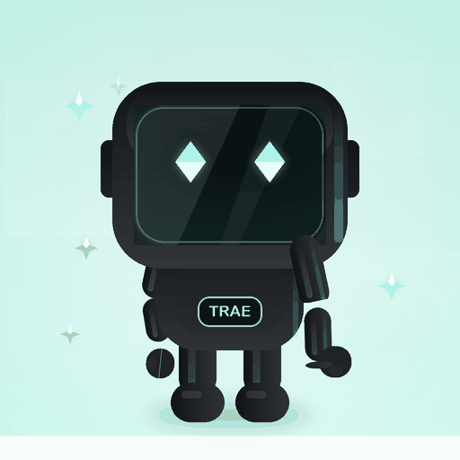
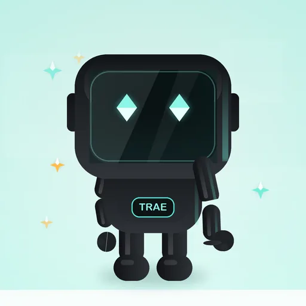
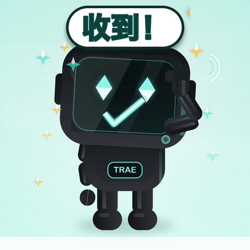

TRAE宝 · Seed 自由创作版 — 01「收到！」动态样稿
512×512 · 1:1 · 48 帧 · 40ms · 1.92s 无缝循环 · 黑色方屏头 / 青色菱形眼 / 真关节敬礼
动态 GIF
通用格式 · 1.52MB · 128 色

loop=0 无限循环；文字与对勾在聊天小窗仍清晰。
全彩动态 WebP
推荐 · 0.44MB · 全彩无抖动

48 个 ANMF 帧，每帧时长 40ms，loop=0。
PNG 静帧（f20 峰值）
105KB · 可直接做静态表情

敬礼到位 + 屏幕对勾 +「收到！」气泡同框。
48 帧时间轴（f0 → f47，f48 回到 f0）